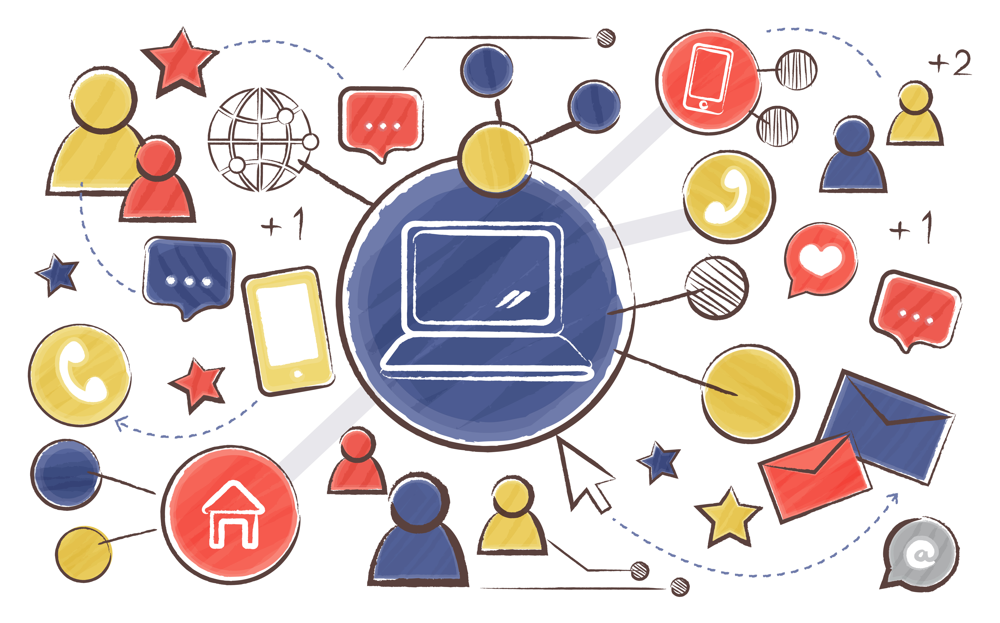
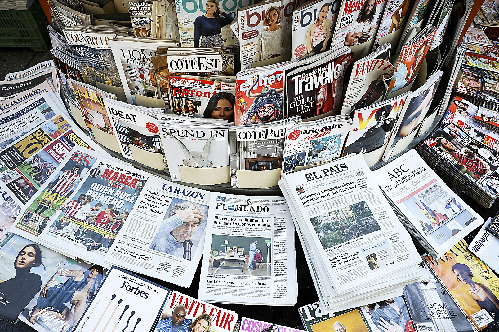
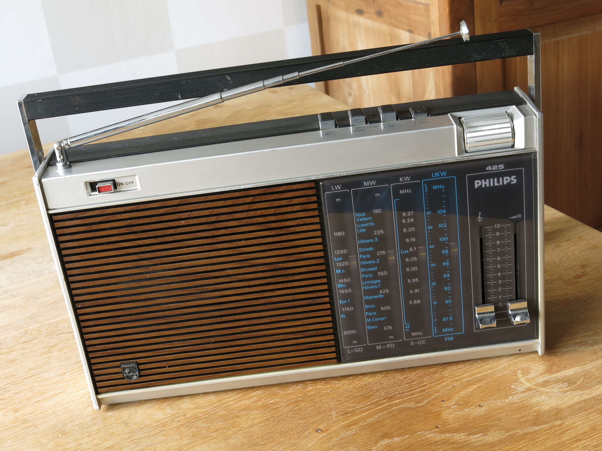
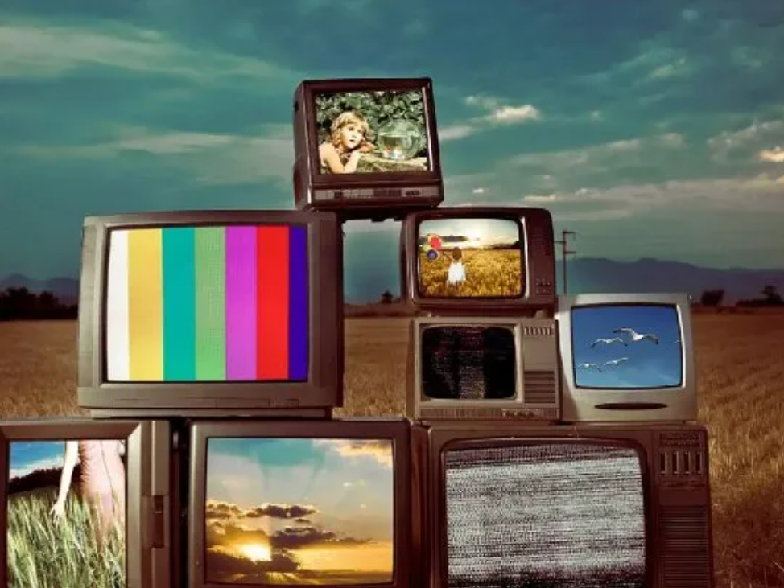

"¿QUE ES LA COMUNICACIÓN?"

La comunicación es el proceso mediante el cual se intercambia información entre dos o más individuos. Este intercambio puede realizarse a través de diversos canales, como el habla, la escritura, los medios digitales, entre otros. La comunicación es fundamental para el entendimiento y la interacción humana, y se compone de varios elementos clave:
• Emisor: La persona o entidad que envía el mensaje.
• Receptor: La persona o entidad que recibe el mensaje.
• Mensaje: La información que se transmite.
• Canal: El medio a través del cual se envía el mensaje (por ejemplo, oral, escrito, digital).
• Código: El sistema de signos y reglas que se utiliza para elaborar el mensaje (por ejemplo, el idioma).
• Contexto: Las circunstancias que rodean el acto comunicativo y que pueden influir en su interpretación.
En el ámbito de los medios de comunicación digitales convergentes, la comunicación adquiere una dimensión adicional, ya que se integra y se adapta a múltiples plataformas y formatos. Esto permite una mayor interactividad y personalización en la transmisión de mensajes, facilitando una comunicación más efectiva y dinámica
Medios de Comunicación Tradicionales

Los medios de comunicación tradicionales son aquellos que han sido utilizados históricamente para transmitir información a grandes audiencias antes de la aparición de los medios digitales. Estos incluyen la prensa escrita, la radio, la televisión y el cine. A continuación, se describen cada uno de ellos con sus características, ventajas y desventajas:

PRENSA ESCRITA: Publicaciones impresas como periódicos y revistas que se distribuyen físicamente.
Características:
• Información detallada y profunda.
• Periodicidad (diaria, semanal, mensual).
• Formato físico.
Ventajas:
•Permite la relectura y el análisis detallado.
•Accesible sin necesidad de tecnología avanzada.
•Credibilidad y prestigio en ciertos segmentos.
Desventajas:
•Menor inmediatez comparada con medios digitales.
•Costos de producción y distribución.
•Impacto ambiental por el uso de papel.

RADIO: Medio de comunicación que transmite audio a través de ondas de radio.
Caracateristicas:
• Transmisión en tiempo real.
• Accesible a través de dispositivos de radio.
• Programación variada (música, noticias, entretenimiento).
Ventajas:
• Amplia cobertura geográfica.
• Accesible y económico.
• Ideal para audiencias en movimiento.
Desventajas:
• Limitado a contenido auditivo.
• Menor profundidad en la información.
• Dependencia de la señal de transmisión.

TELEVISIÓN: Medio que transmite contenido audiovisual a través de señales de televisión.
Caracteristicas:
• Combina imagen y sonido.
• Programación variada (noticias, entretenimiento, educación).
• Transmisión en tiempo real.
Ventajas:
• Alto impacto visual y emocional.
• Amplia audiencia.
• Ideal para publicidad y marketing.
Desventajas:
• Costos elevados de producción y transmisión.
• Dependencia de la señal de televisión.
• Menor interactividad comparada con medios digitales.